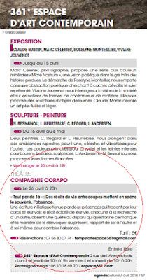
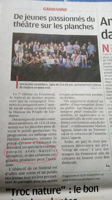
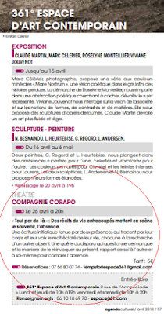
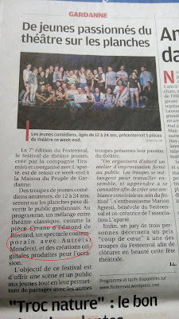

Presse
Tout par de-là, au 361°

Autre(s) Monde(s), au Festeenval

Autre(s) Monde(s), au 3C
par le By-night
Tout par de-là, au 361°

Autre(s) Monde(s), au Festeenval

Autre(s) Monde(s), au 3C
par le By-night